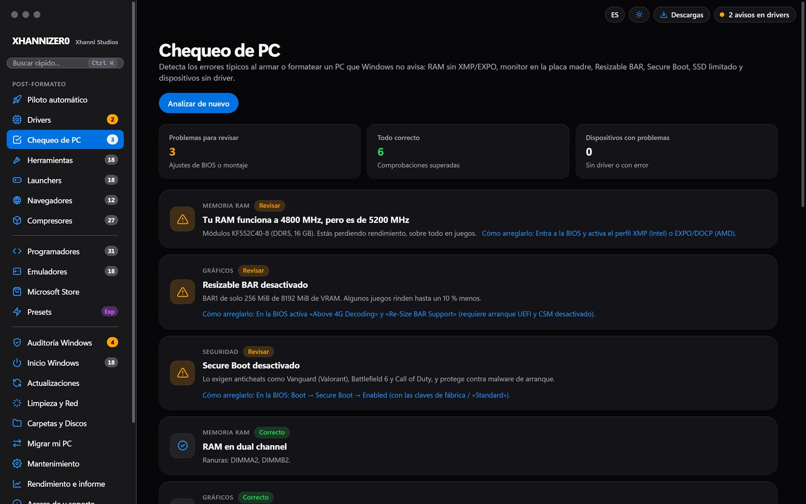
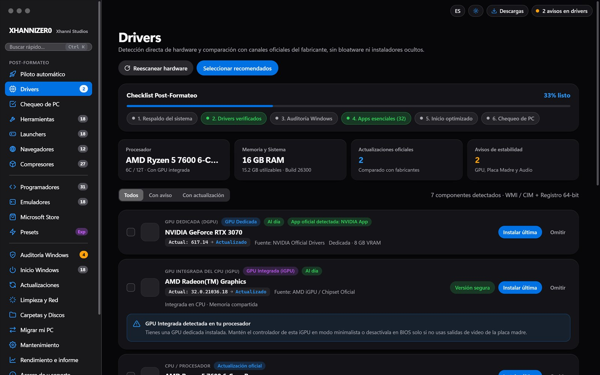
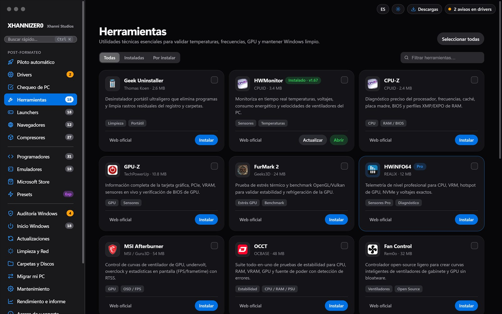
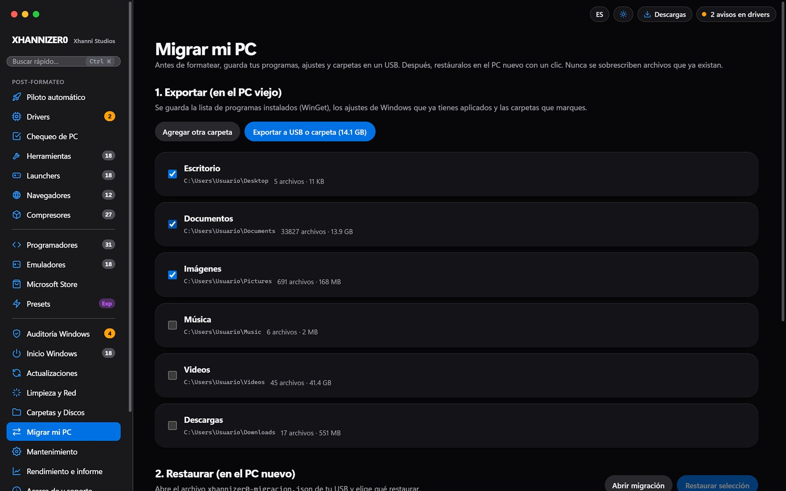
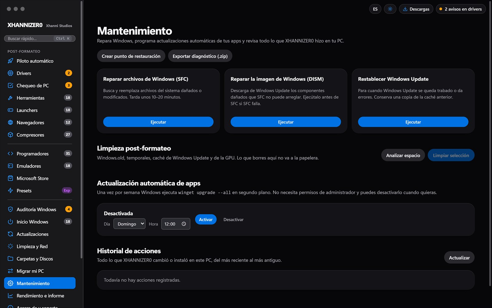
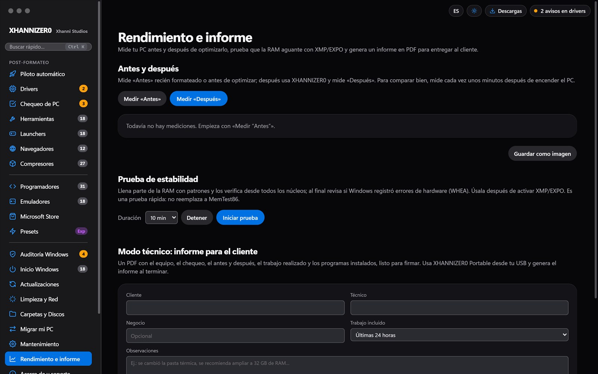

Todo lo que haces a mano después de formatear o armar un PC, en orden y desde fuentes oficiales.
Piloto automático
Respaldo, punto de restauración, drivers, runtimes, tus programas, ajustes de Windows, limpieza y chequeo final. Si hay que reiniciar, la app se vuelve a abrir sola y sigue donde quedó.
Respaldo
Drivers
Runtimes
Tus apps
Ajustes
Limpieza
Chequeo de PC
Encuentra lo que Windows no avisa: RAM sin XMP/EXPO, monitor conectado a la placa madre, Resizable BAR o Secure Boot apagados. Revisa tu tarjeta de video, procesador y placa, así que solo te sugiere lo que tu PC de verdad soporta.
Drivers oficiales
Detecta tu hardware real (procesador, tarjeta de video, placa madre, audio y red) y lo compara con los canales oficiales de cada fabricante.
Más de 100 programas
Navegadores, launchers, herramientas, compresores y runtimes por WinGet o desde su sitio oficial. Marca los que quieras e instálalos de una vez.
Migrar mi PC
Antes de formatear, guarda tus programas, ajustes y carpetas en un USB. Después, restáuralos en el PC nuevo sin sobrescribir nada.
Presets por niveles
Gaming, programación, oficina o estudios, en niveles del más seguro al más competitivo. Se adaptan a tu PC, crean un punto de restauración de Windows antes de los cambios grandes y todo se puede deshacer.
Liviana en cualquier PC
Gasta poca memoria y procesador. En equipos modestos activa sola el Modo ligero, y puedes abrirla como administrador con un clic para no ver avisos de Windows a cada rato.
Informe para tu cliente
Si formateas equipos por trabajo, mide el antes y el después y entrega un informe en PDF con todo lo que hiciste.
Así se ve
Simple de usar. Claro en lo que hace.

Chequeo de PC: te dice qué revisar y cómo arreglarlo.

Drivers: tu hardware real y la versión oficial de cada uno.

Catálogo: programas oficiales, sin instaladores escondidos.

Migrar mi PC: lleva tus cosas al equipo nuevo.

Mantenimiento: repara Windows y mantiene tus apps al día.

Rendimiento: antes y después, y el informe para tu cliente.
Por qué confiar
Nada se cambia sin un respaldo.
La hicimos para usarla en nuestros propios equipos, así que es cuidadosa con el tuyo.
Todo se puede deshacer
Cada cambio exige un respaldo verificado. Si algo no te gusta, lo vuelves atrás desde la app.
Descargas verificadas
Ves de dónde baja cada programa, su huella SHA-256 y su firma digital. Los instaladores sin firma se bloquean.
Sin telemetría
Sin cuentas, sin publicidad y sin datos enviados. Lo que guarda la app se queda en tu PC.
Código abierto
El código está en GitHub con licencia GNU GPLv3 para que cualquiera lo revise.
Preguntas frecuentes
Lo que más nos preguntan.
¿Es gratis?
Sí, completa y sin publicidad. No necesitas cuenta.
¿Por qué Windows dice «Windows protegió su PC»?
Aparece con apps nuevas que todavía no tienen firma de código. Toca Más información → Ejecutar de todas formas. Estamos trabajando para firmarla.
¿Qué versión descargo?
Descarga el instalador (termina en -x64-nsis.exe) si la vas a usar en tu PC, o la versión portable (termina en -Portable.exe) si quieres llevarla en un USB para formatear otros equipos. La portable guarda sus datos junto al archivo.
¿Puede dañar mi PC?
Antes de cambiar algo, la app crea un respaldo verificado y un punto de restauración, y cada cambio se puede deshacer. Igual te recomendamos mantener tus propios respaldos.
¿Incluye juegos o BIOS para emuladores?
No. Solo instala emuladores open-source desde sus proyectos oficiales. No incluye ni descarga BIOS, firmware ni juegos.
Algo no funciona, ¿qué hago?
En la app ve a Acerca de y soporte → Reportar un problema. Se guarda un diagnóstico y se abre nuestro Discord para que crees un ticket. Te responde quien hizo la app.
Tu PC, listo hoy.
Descárgala gratis y, si algo falla, te ayudamos en Discord.